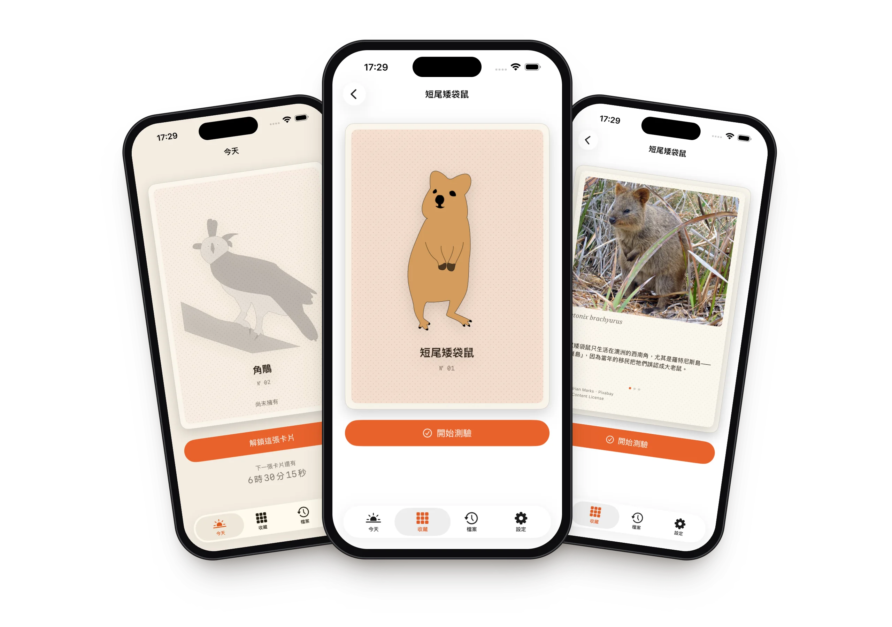
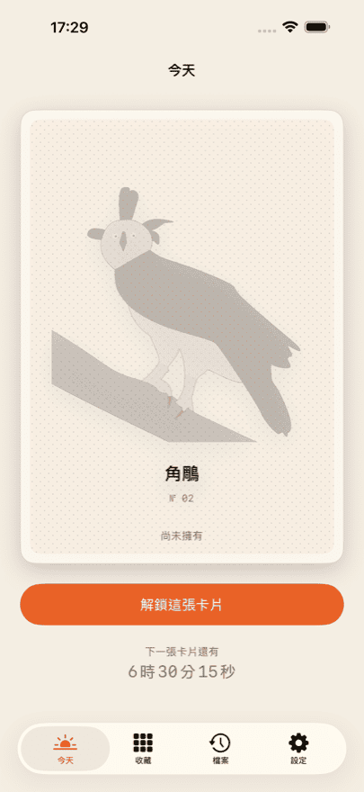
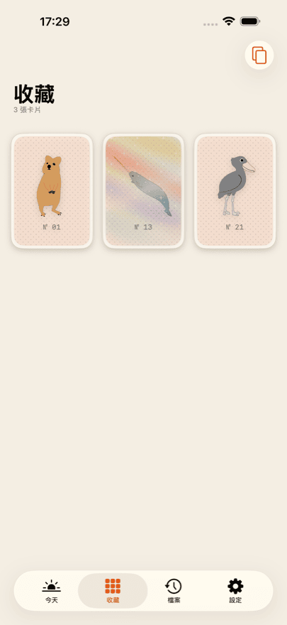
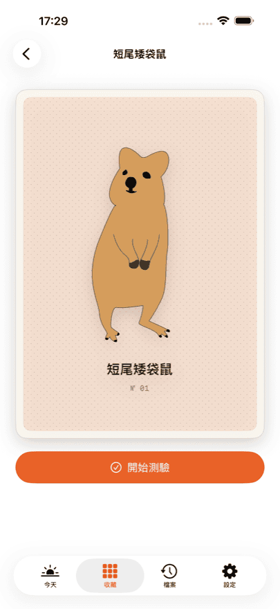
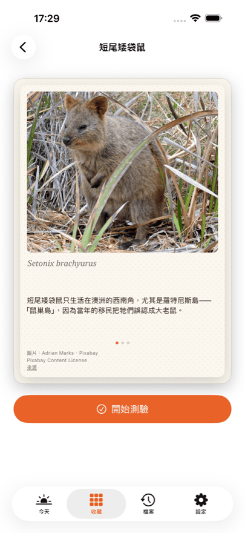
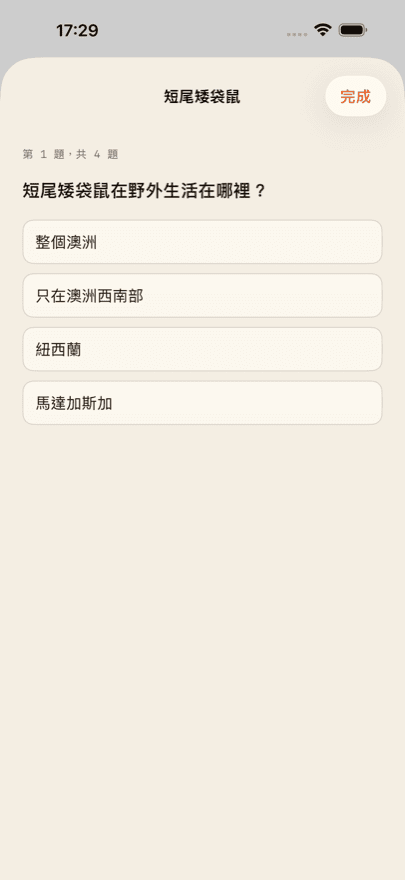

Daily Bestiary
值得收藏的稀有動物卡






你會得到
每天一張
一張，不會更多。當天的卡片依你自己的起始日推算，而不是依日曆日期——什麼時候開始都可以。
一張照片和三條知識
每張背面都有該動物的真實照片、三條知識和學名。
每種動物一套測驗
每種動物四道題，由一位生物老師審訂。隨時可以重玩。
一份不斷長大的收藏
相簿裡只有你自己的卡片。沒有空位，沒有「幾分之幾」，也沒有比拼。
閃卡
有些卡片會發光：傾斜手機，光澤就會在卡面上移動。
Collector
Collector 會打開封存：錯過的那一天仍然可以補回來。每天的卡片也包含在內，你還能看到整份收藏的測驗統計。
Collector 是訂閱，在你取消之前會自動續訂。隨時可以在 Apple 帳號設定中取消。目前的價格與週期請以 App Store 為準，各個國家或地區並不相同。
無帳號、無資訊流、無廣告
沒有註冊，也沒有登入。你的收藏保存在裝置上；如果你登入了 iCloud，它會在你自己的裝置之間私密同步。開發者無法存取。
沒有可刷的內容，也沒有要肝的任務。沒有廣告、沒有廣告聯播網，也沒有跨 App 的追蹤。購買透過一家服務供應商處理，究竟傳送了什麼，隱私政策裡寫得清清楚楚。
圖片來源
卡片正面的插畫為手繪。背面的照片來自可自由使用的來源——Pixabay、Unsplash 與 Wikimedia Commons。
每張照片都在自己那張卡片的背面標註了攝影者、授權條款和來源連結。不是藏在細則裡，而是就在圖片所在的地方。
常見問題
Daily Bestiary 要收費嗎？
下載免費，前三張卡片也免費——背面、知識和測驗一應俱全。之後你可以單獨解鎖當天的卡片、購買十張裝，或是訂閱 Collector。目前價格請以 App Store 為準，各地並不相同。
需要註冊帳號嗎？
不需要。沒有註冊、沒有登入、沒有個人檔案。App 不會索取姓名或電子郵件地址。
總共有多少張卡片？
任何地方都沒有寫——App 裡沒有，這裡也沒有。寫出總數，收藏就變成了進度列，而那正是我們不想要的。當你集滿現有的全部卡片時，App 會告訴你。
錯過一天會怎樣？
那張卡片不會消失。Collector 會打開封存，可以把錯過的日子補回來。沒有 Collector 的話，第二天就是下一張卡片。
iPhone 和 iPad 之間會同步嗎？
會，只要兩部裝置用同一個 Apple 帳號登入 iCloud。同步透過你自己的私人 iCloud 資料庫進行，開發者無法查看。
重新安裝 App 之後，購買紀錄不見了？
沒有不見。App 的設定裡和每個購買頁面上都有「回復購買項目」。它會把訂閱和剩餘次數重新連結到你的 Apple 帳號。收藏本身則透過 iCloud 回來。
如何取消 Collector？
透過 Apple 而不是 App：設定 → 你的名稱 → 訂閱項目。可以隨時取消，於目前週期結束時生效。App 設定中的 Customer Center 也會前往同一個頁面。
沒有網路能用嗎？
可以。所有卡片、照片和題目都隨 App 一起提供，不會另行下載。只有購買和 iCloud 同步需要連線。